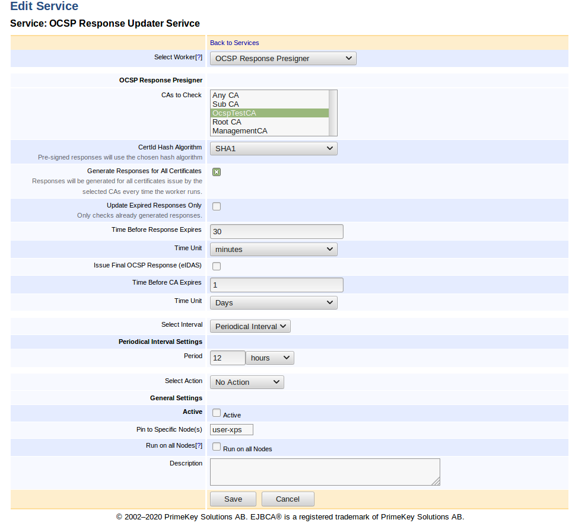
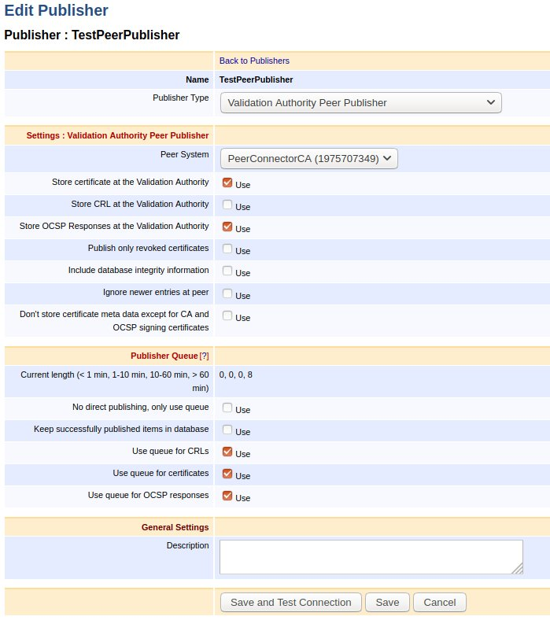
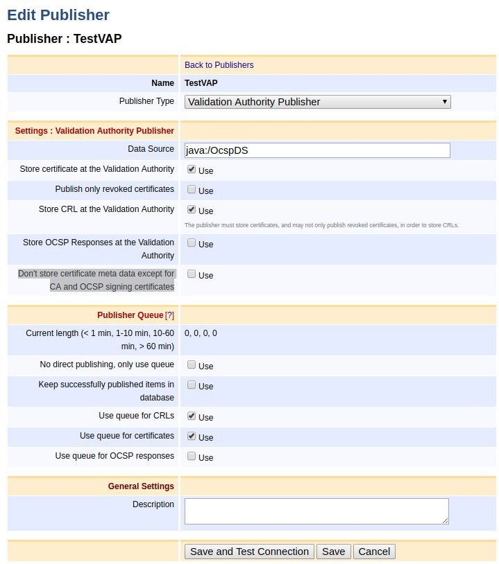

OCSP Response Pre-Production
ENTERPRISE This is an EJBCA Enterprise feature.
Pre-produced OCSP responses (as described in RFC 6960 section 2.5) allow responses to be pre-produced and persisted before they are requested. This allows for increased throughput on the OCSP responders since signing responses commonly becomes a bottleneck during peak loads.
The following covers all aspects of setting up and managing pre-production of OCSP responses. For more conceptual information, see Pre-Produced OCSP Responses in OCSP.
Enabling OCSP Pre-Production
OCSP pre-production is enabled per CA level. Unless enabled, EJBCA will never serve or persist pre-produced responses for this CA.
To enable OCSP pre-production:
Go to CA UI → Certification Authorities.
Select CA and click Edit.
Select Pre-produce OCSP Responses and click Save.
Store responses on-demand
Enabling Store Responses on-demand will persist a copy of OCSP Responses generated while requesting the status of certificates issued by this CA. The persisted response will be used to serve future requests for the same certificate until the response validity expires or a newer response is generated. If the persisted response nextUpdate field has passed the current date while requesting the certificate status, the responder will generate and store a new response in parallel with answering the request.
The response to an OCSP Request containing status requests for multiple certificates will not be persisted for future use since the number of possible permutations makes it unlikely to ever be reused.
Generating Responses
There are two ways of generating pre-produced OCSP Responses. Either by allowing on-demand response generation (see Store responses on-demand) or by setting up an OCSP Response Pre-Signer service. Both approaches may be used at the same time.
On-demand: Responses are persisted, upon request and used for future requests until it expires.
OCSP Response Presigner: Generates, persists and updates responses for all certificates issued by the configured CAs.

For more information on the service worker, see OCSP Response Pre-Signer.
Cleaning up Responses
This functionality enables the periodical removal of old/expired responses stored by the OCSP Response Pre-signer. It removes all responses except the ones with the latest "producedAt" for each response to the corresponding certificate.
When enabled, it runs on an interval schedule defined by every X days/hours/minutes.
To enable response cleanup:
Click System Configuration → Basic Configuration.
Select Activate for Enable OCSP Responses Cleanup in the OCSP Options section.
Select an interval. Valid schedule interval values are:
Days: [1-31]
Hours: [1-23]
Minutes: [1-59]
It is recommended to keep Enable OCSP Responses Cleanup enabled in environments where new responses are generated continuously with short expiration times (i.e. short nextUpdate times).
Publishing of OCSP Responses
Two types of publishers support publishing of OCSP responses, the Validation Authority Peer Publisher and the Validation Authority Publisher.
Like the Validation Authority Publisher, the Validation Authority
Peer Publisher
publishes issued certificates from an EJBCA CA to a VA, but over TLS using EJBCA Peer Systems
. For more information about the publishers, see Validation Authority Peer Publisher and the Validation Authority Publisher.
Validation Authority Peer Publisher
To allow publishing OCSP responses on a VA, create a Validation Authority Peer Publisher configured according to the following example.
Note that the option Store OCSP Responses at the Validation Authority must be enabled in order for the responses to get published.

The Publisher Queue configuration works similarly to CRLs and certificates. If the option Use queue for OCSP responses is enabled, then if something goes wrong while publishing the responses to the VA, the responses will get queued waiting for the next round of queue processing.
Validation Authority Publisher
To use the Validation Authority Publisher, create a Validation Authority Publisher configured according to the following example.

Enabling Store OCSP Responses at the Validation Authority results in publishing the OCSP responses using the Data Source set in the Validation Authority Publisher configuration. For more information on VA Publisher settings, see Validation Authority Publisher.
Note that according to the implementation, publishing of OCSP responses occurs asynchronously and right after creating the OCSP response, signing it and returning the response to the client.
OCSP Extensions
Generally, EJBCA will not persist responses containing extensions with the exceptions of the extensions below. However, such requests will still be served as usual when no stored response exists. That is, a new response will be generated for those requests.
Nonce
Having "pre-produced" responses enabled will still allow the client to send a request with the nonce extension. However, the responder will ignore that and send a response back without the nonce extension. This is because each nonce is only valid for that specific request and it cannot be served to other clients. Hence it does not make sense to persist the response for future use.
Archive Cutoff
If Archive Cutoff is configured for the responder, it will also be used while pre-producing responses for it. That is, the behavior is unchanged compared to not using pre-produced responses. For more information, see Archive Cutoff.
Issuing Final OCSP Responses
According to ETSI EN 319 411-2 (CSS-6.3.10-09), Trust Service Providers (TSPs) may compute a last OCSP answer for each and every issued certificate when the CAs certificate is about to expire. This is in practice done by generating responses with 'nextUpdate' set to '99991231235959Z', sign and persist them before the CA expires. The OCSP Response Pre-Signer service can be used to perform such an operation.
Since signing responses for every certificate issued by a CA may be very time consuming and cause high HSM load, this should be done well in advance of the CA expiration date. The time interval can be configured using the Time Before CA Expires input field. Once a final OCSP response has been issued for a certificate, no new responses will be persisted for that certificate. For more information on the service settings, see OCSP Response Pre-Signer.
Create Pre-Produced OCSP Responses Signed by a CA
If you want to issue pre-produced OCSP responses directly from a CA, using the CA's signing key, you can do so by not creating an OCSP key binding for the CA. You also need to specify the validity time of OCSP responses in conf/ocsp.properties.